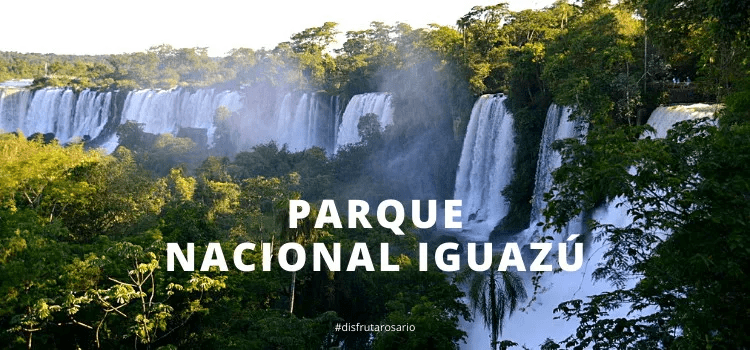
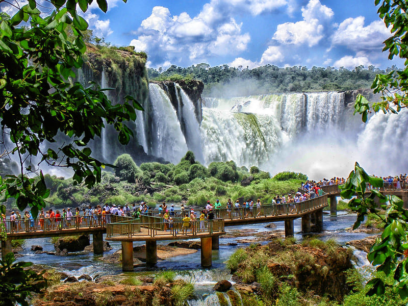
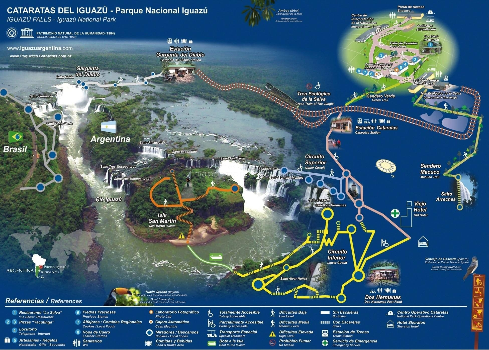

Una de las 7 maravillas del mundo... y en argentina!

El Río Iguazú, que significa en guaraní agua grande, desemboca en el Paraná creando un manto de agua de un ancho de 1500 metros, que salpica islas e islotes hasta llegar a un barranco de lava formado hace 120 millones de años.

¿Dónde se ubica?
Al norte de la provincia de Misiones, en el límite con Brasil, se encuentran las majestuosas Cataratas del Iguazú: una de las Siete Maravillas Naturales del Mundo y, sin dudas, uno de los lugares más espectaculares de Latinoamérica.
Están totalmente insertadas en áreas protegidas; el sector de la Argentina se encuentra dentro del parque nacional Iguazú, mientras que el de Brasil se encuentra en el "Parque Nacional do Iguaçu", en el Estado de Paraná. Se encuentran próximas a la frontera entre Paraguay y Argentina
Tanto su ubicación en medio de la selva como su descomunal volumen de agua y numerosos saltos las convierten en un sitio inolvidable y de obligada visita en todo viaje a Argentina
